Understanding the distinction between what archaeology reveals and what tradition remembers.
Based on Archaeological Evidence
Anuradhapura Period Origins
The archaeological evidence and architectural characteristics of the structures at Maligathanna suggest that the site belongs to the Anuradhapura period of Sri Lanka's history.
However, no written evidence directly connected with Maligathanna has been found so far. The site's history must therefore be interpreted primarily through its physical remains and architectural features.
The absence of written records means the site's precise historical narrative remains a subject of ongoing scholarly investigation.
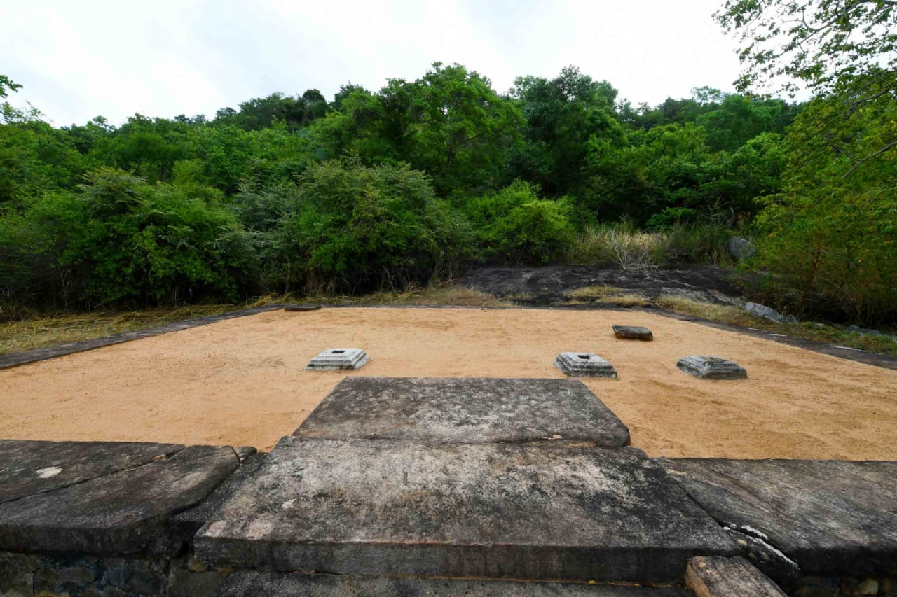
Local Tradition — Not Archaeologically Confirmed
The Legend of King Valagamba
Local tradition holds that King Valagamba (Vattagamani Abhaya) constructed the site and offered it to forest-dwelling monks. Villagers also believe that King Valagamba's royal palace once existed here — an association reflected in the very name "Maligathanna."
The nearby Ma Eliya Wewa (reservoir) is also traditionally considered to have been constructed during the reign of King Valagamba.
Important: There is no archaeological evidence confirming that a royal palace existed at this site. These accounts represent local oral tradition, not documented historical fact.
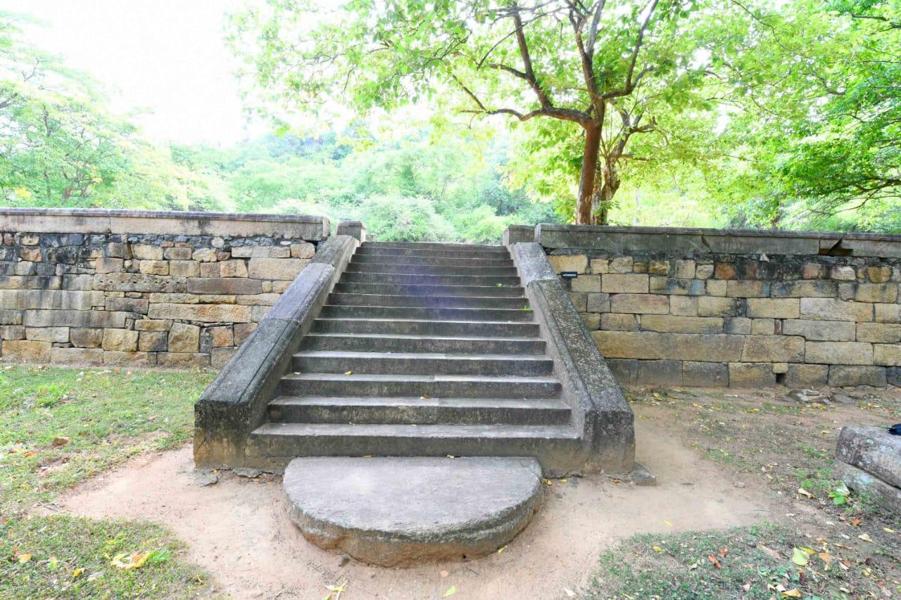
Scholarly Interpretation
A Forest Monastic Complex
Based on the architectural evidence, scholars interpret Maligathanna not as a palace site, but as a monastic complex designed for forest-dwelling monks — a category of practitioners who sought secluded environments for deep meditation.
The site's design — double-platform structures, natural rock ponds, a walking meditation hall, and deep forest setting — is entirely consistent with the requirements of forest monastery (aranna sena) traditions of ancient Sri Lanka.
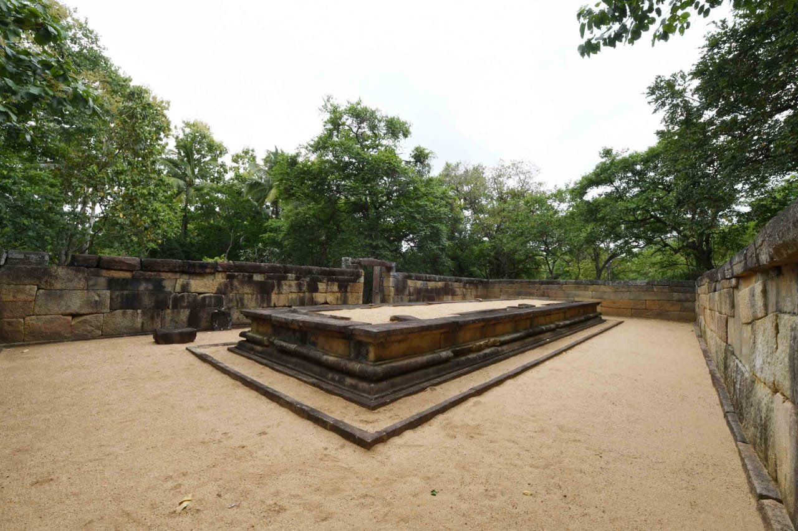
What Was Found
Archaeological Remains
Later research identified remains spread across approximately 27 acres. Click any card to learn more.
Patanaghara
පඨානඝර
Double-platform forest meditation building with an outer mandapa and inner chamber. A distinctive feature of ancient Sri Lankan forest monasticism. Conserved by the Department of Archaeology.
Chankamanaghara
චංකමනාඝර
A walking meditation hall used by monks for kinhin (walking meditation). Excavated and conserved by the Department of Archaeology in 1998. Now a declared protected monument.
Constructed Steps
නිර්මාණය කළ පඩිපෙළ
Carved and constructed stone stairways providing access between the different platform levels, associated with the platform architecture of the site.
Rock-cut Steps
ගල් කොටා සෑදූ පඩිපෙළ
Natural rock surfaces carved into steps, providing access to elevated areas. A practical feature of ancient Sri Lankan rock monastery architecture.
Natural Rock Ponds
ස්වාභාවික ගල් විල්
Natural depressions in rock that collect and store water, with rock-cut stairways providing access. These occur at several locations across the site.
Grinding Marks
ඇඹරීමේ සලකුණු
Marks on rock surfaces created by grinding activities — evidence of daily monastic life at the site during its period of occupation.
Ketukawata
කේතුකවාට
Additional monastic architectural element identified within the approximately 27-acre site area. Forms part of the complex of remains at Maligathanna.
Other Remains
වෙනත් නටබුන්
Additional archaeological remains have been identified across the 27-acre site, including roof tile fragments near the Patanaghara that confirm the structures originally had roofs.
Major Structures
Key Architectural Features
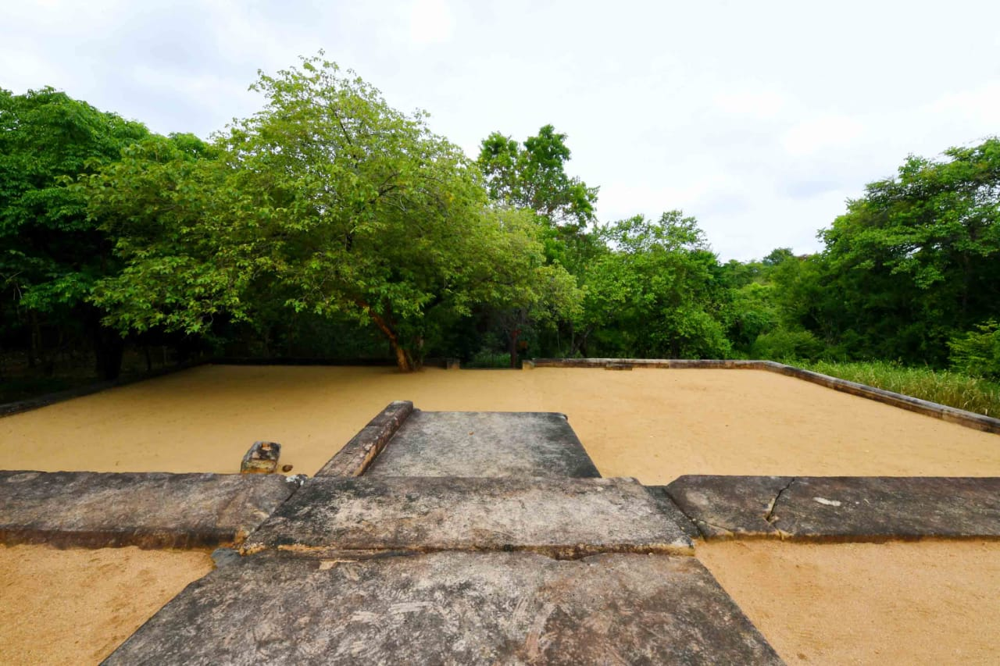
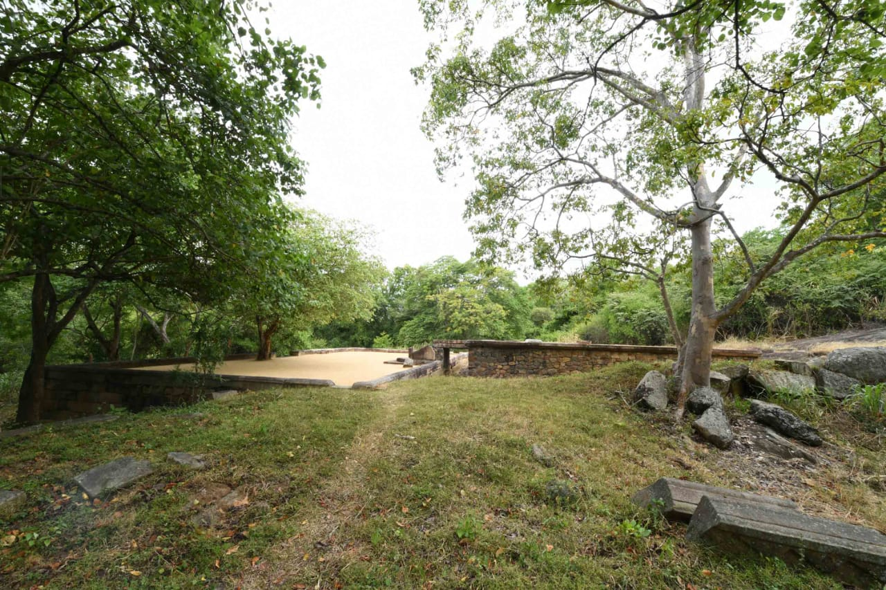
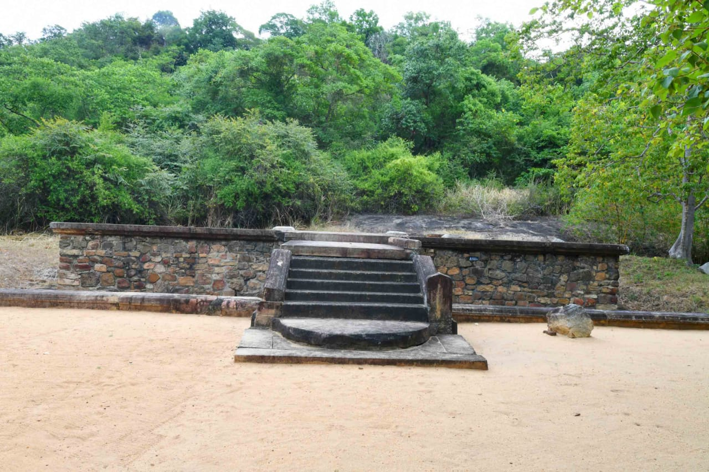
Patanagharaපඨානඝර
These buildings were created in forest environments, with site selection considering the need for secluded places suitable for deep meditation — separate from crowded areas frequented by lay devotees.
A defining feature is its double-platform architecture. The two platforms can be described as the outer mandapa and the inner chamber, connected by a single stone slab.
Architectural Layout
Outer Mandapa (ප්රධාන ශාලාව)
Single Stone Slab (සම්බන්ධක ශිලා)
Inner Chamber (අභ්යන්තර කාමරය)
A natural water channel surrounds the upper building, possibly for animal protection and temperature regulation.
A portion of the main staircase has been damaged due to human activity.
The Patanaghara has been conserved and declared a protected monument.
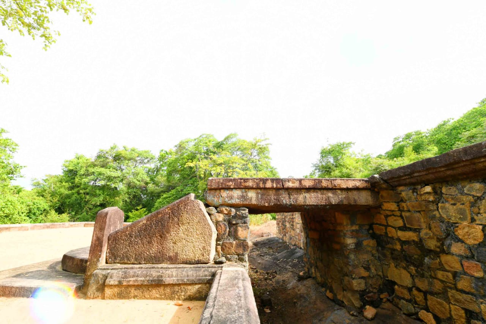
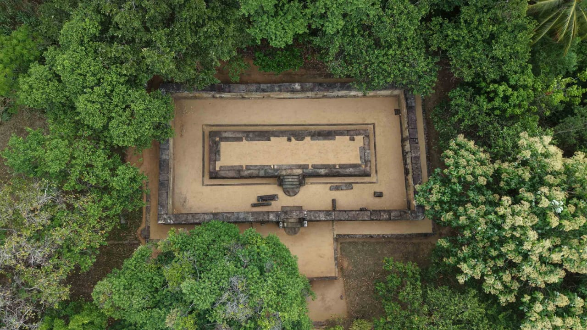
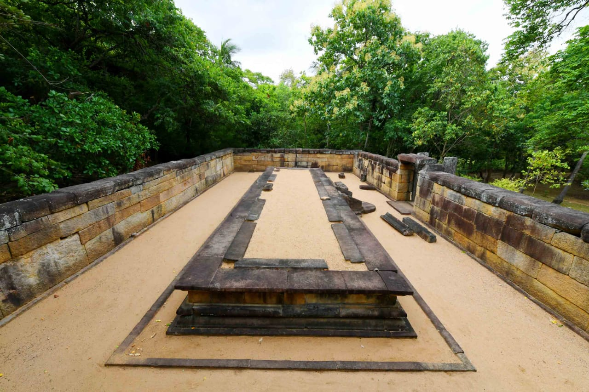
Chankamanagharaචංකමනාඝර
1998 — Excavated & Conserved by the Department of Archaeology
The Chankamanaghara is a walking meditation hall — an important element of ancient Buddhist monastic architecture. It was likely used by resident monks for their practice of chankamana (walking meditation).
The Chankamanaghara at Maligathanna was excavated and conserved by the Department of Archaeology in 1998 and has been declared a protected monument.
Used for kinhin (walking meditation) practice by forest-dwelling monks.
Declared a legally protected monument.
Ongoing archaeological supervision by the Department of Archaeology.
Other Architectural Features
Stone Stairways
Constructed stone steps with moonstones
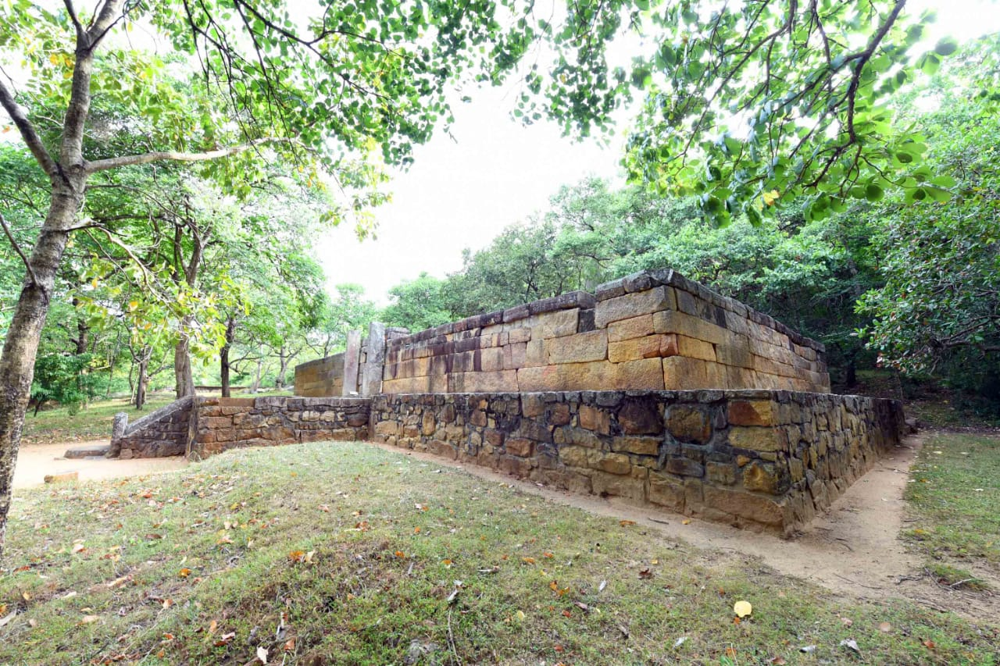
Platform Walls
Double-tiered retaining walls
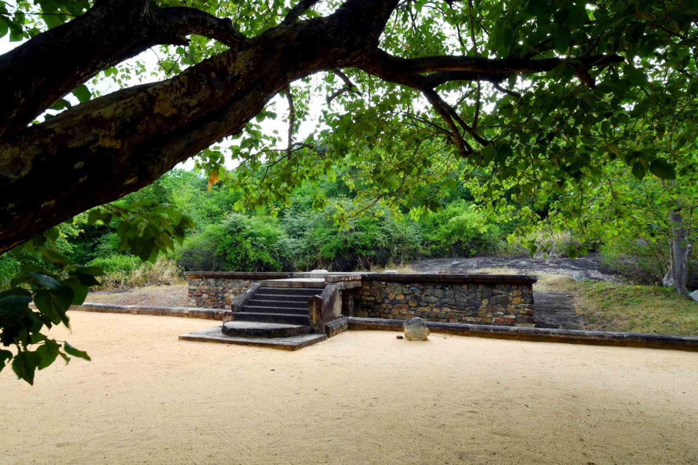
Stone Gateway
Monolithic stone doorframe entrance
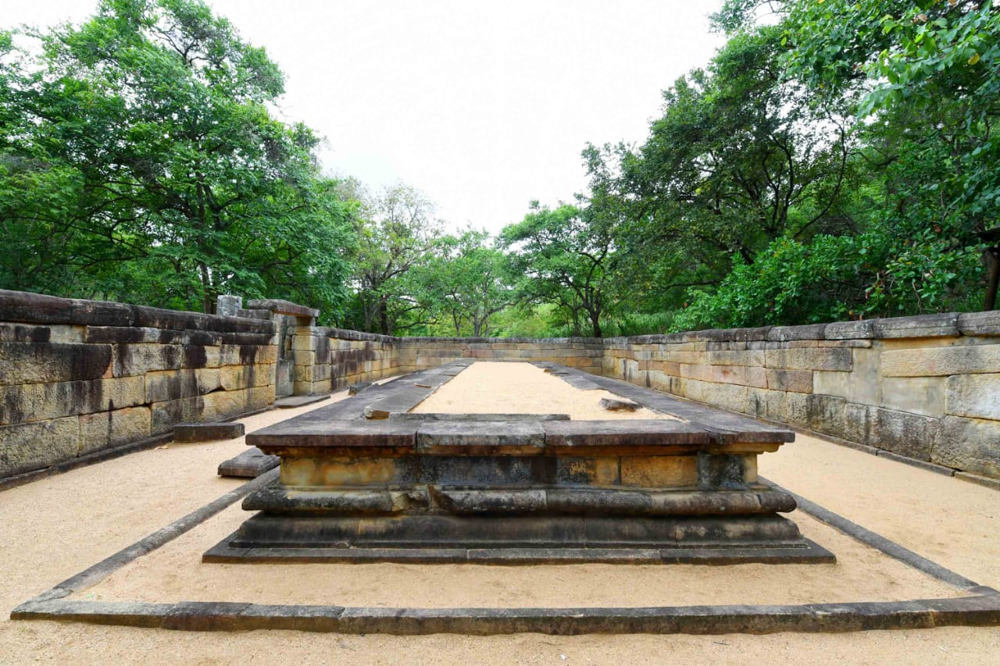
Platform Entry
Stair access to raised platform areas
Through the Ages
Historical Timeline
Anuradhapura Period
Construction of the Monastic Complex
Archaeological and architectural evidence indicates the site dates to the Anuradhapura period. The exact date of construction remains unknown.
Archaeological Evidence
Local Tradition
King Valagamba — Traditional Association
Local tradition says King Valagamba constructed the site and offered it to forest-dwelling monks. This has not been confirmed by archaeological evidence.
Local Tradition Only
1969
Settlement Removed
A settlement that had formed at the site was removed by the Department of Archaeology, enabling systematic research.
Department of Archaeology
After 1969
Remains Identified — 27 Acres
Later research identified archaeological remains spread across approximately 27 acres, revealing the full extent of the ancient monastic complex.
Archaeological Research
1998
Chankamanaghara Excavated & Conserved
The Chankamanaghara (walking meditation hall) was excavated and conserved by the Department of Archaeology.
Conservation Work
Protected
Declared Protected Monuments
The conserved Patanaghara and Chankamanaghara were declared protected monuments under Sri Lankan archaeological preservation law.
Legal Protection
Present
Ongoing Archaeological Supervision
The site is currently maintained as a permanent worksite under the supervision of the Department of Archaeology.
Active Worksite
Visual Heritage
Photo Gallery
Explore the archaeological site through photography.
The journey of protecting Maligathanna's archaeological legacy.
Conserved platform walls at Maligathanna
1969
Settlement Removed
A settlement that had formed at the site was removed by the Department of Archaeology, opening the site for proper research.
Research
Archaeological Research
Later research identified archaeological remains spread across approximately 27 acres.
1998
Conservation Works
The Patanaghara and Chankamanaghara were conserved by the Department of Archaeology. The Chankamanaghara was specifically excavated in 1998.
Present
Protected & Active Worksite
The conserved monuments are declared protected monuments. The site is maintained as a permanent worksite under ongoing Department of Archaeology supervision.
Did You Know?
The site covers approximately 27 acres of archaeological remains.
The Patanaghara has a distinctive double-platform architecture with an outer mandapa and inner chamber.
A natural water channel surrounds the upper building of the Patanaghara.
The Chankamanaghara was excavated and conserved in 1998 by the Department of Archaeology.
Roof tile remains near the Patanaghara confirm the structures originally had roofs.
Historical Accuracy Note
This website presents information based on archaeological documentation. Where archaeological evidence and local tradition differ, they are clearly presented separately. Local traditions are labelled as such and are not presented as historically confirmed facts. The absence of written records at this site means interpretation relies primarily on architectural and material evidence.